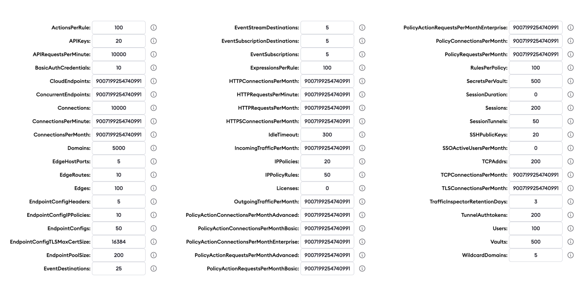
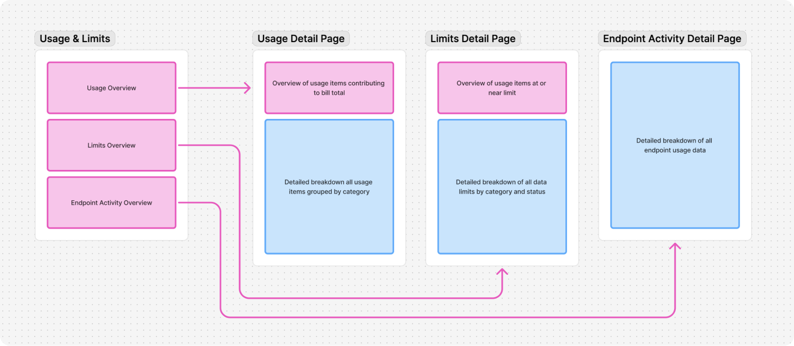
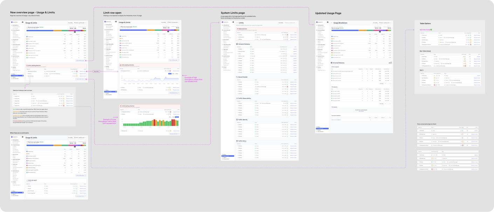
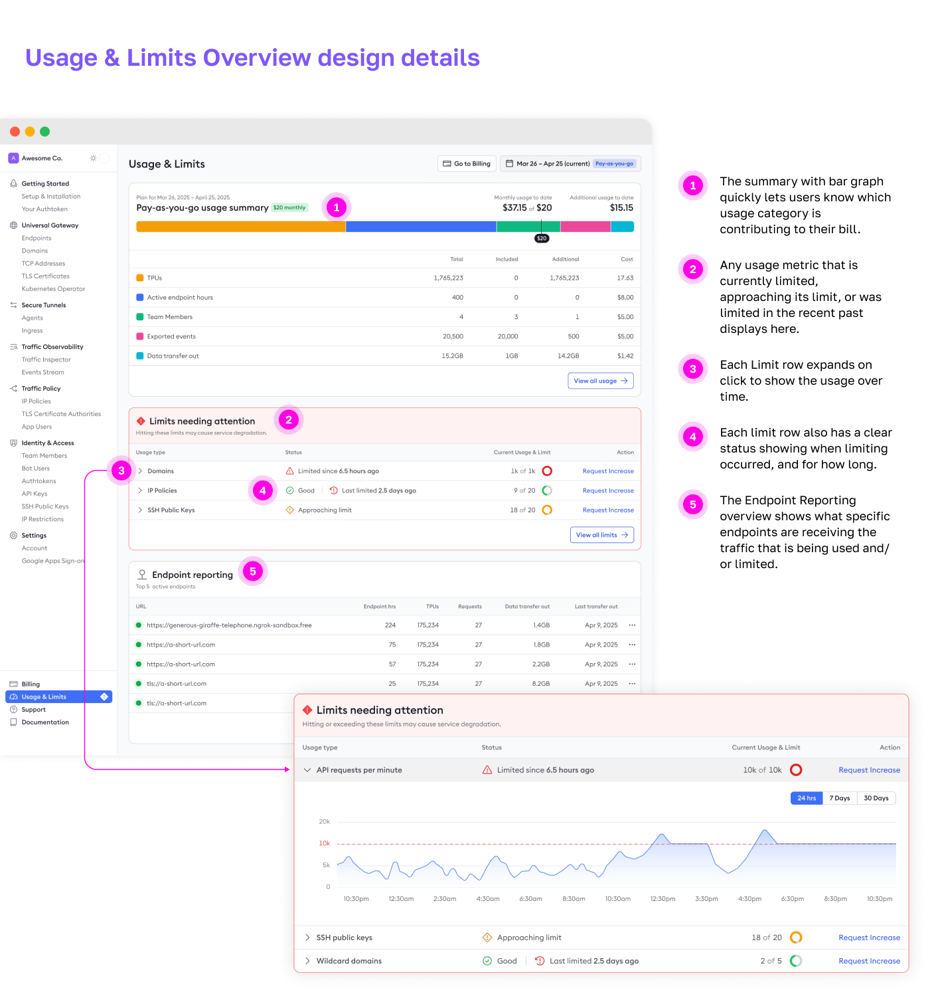
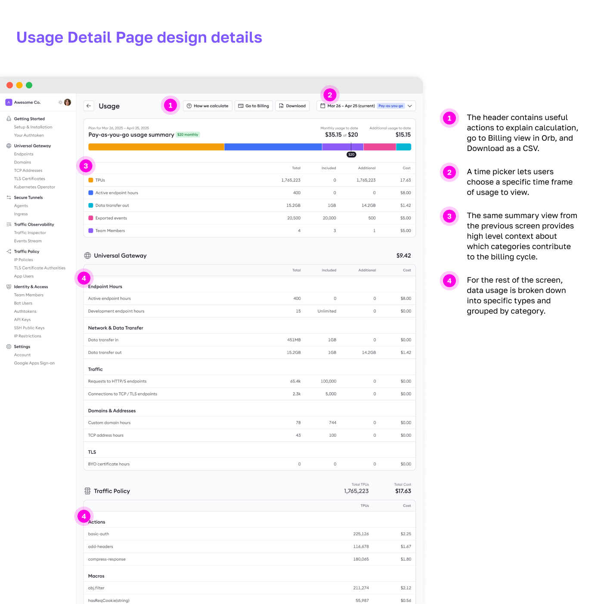
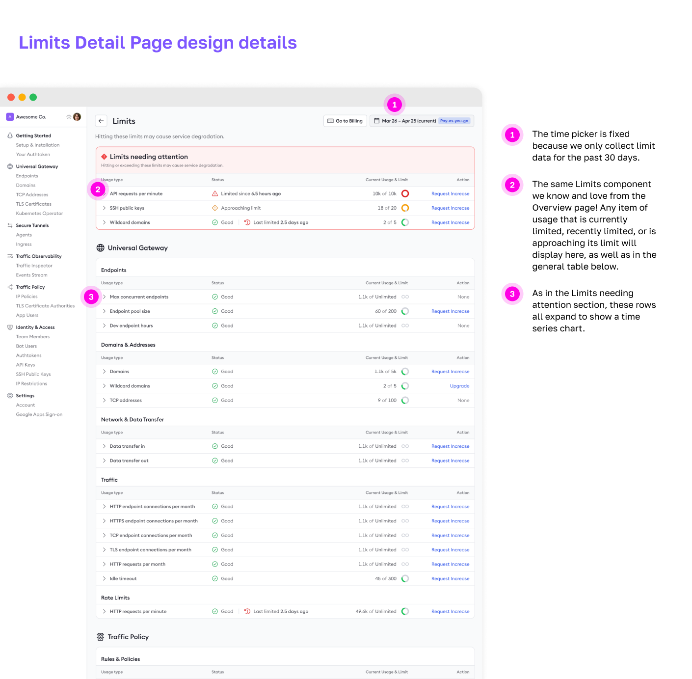
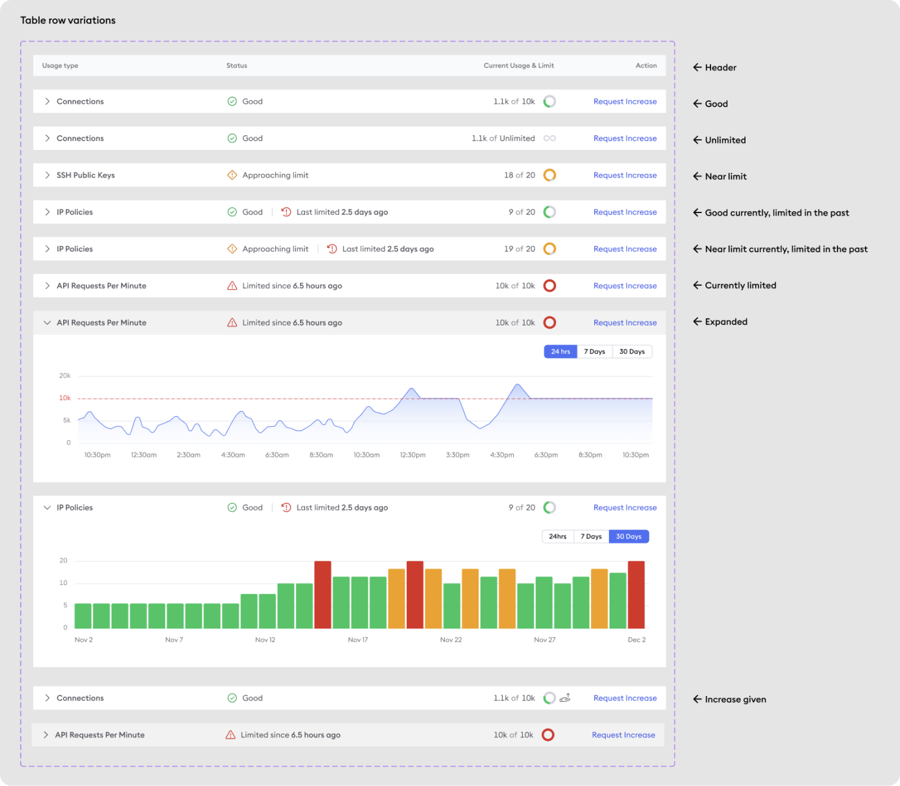

Nobody likes a surprise bill or data throttle.
One of the first projects at ngrok was to finish a redesign of the Usage page that had already been through a few explorations before I arrived. As the team and I dug in, we realized that we also needed a way to communicate when usage was about to hit a limit, so customers wouldn’t end up with either a surprise bill or a costly service interruption. Easy, right? Well, no, not really...
There were 2 major challenges the team and I had to design around. First, our billing platform, Orb, had some extreme limitations on what data reporting we could get back from it. Second, the kinds of limits customers could hit with their usage were extremely varied. Some, like IP Policies, could be upgraded by request, but would cause service interruption in the meantime. Others could cause an immediate billing increase for any overage. A third type could not be upgraded, didn’t contribute to the bill cost, but did throttle data. And a fourth type, like Secrets Per Vault, had an X per Y limit: Users could have 500 vaults, each with 500 secrets. Yikes.

Usage & Limits is like electricity: you only care about it when you get a big bill, or when you don’t have it.*
Once I was onboarded to the team and we made the decision to add Limits to the Usage project, I started working on a way to combine the two into one seamless experience. I proposed a Usage & Limits “hub,” which included an Endpoint Activity breakdown page, for even more granularity into usage and limits.

After creating some rough sketches in Whimsical (which I no longer have, I’m sooooo sorry), I started mapping out flows and screens with our actual component library in Figma. Below is just one example of several iterations. Don’t worry, you don’t need to zoom in on your browser to 7000%. I’ll show all the gory details in just a bit. Want to know more about ideas and explorations that didn’t make the final cut? I’ll be happy to walk through them in a 1:1 setting.

My design process for Usage & Limits had me mostly in Figma working out details, flows, and states. I met with the project’s tech lead / pm on a daily basis at the beginning to iterate rapidly. Once we got things to a more cohesive state, we started getting design feedback from a handful of customers via Slack and Zoom. When we were confident with the feedback, I started working directly with front and back end engineers to make sure my ideas were communicated clearly, and to solve any design problems that inevitably came up when testing with real data.
As shown above in the Process section, I designed a Usage and Limits hub consisting of:
- A Usage & Limits Overview page
- A Usage detail page
- A Limits detail page
- An Endpoint Activity detail page (not shown for brevity, you ain’t got all day.)
Usage & Limits Overview
This is the first screen of the hub, and where users land if they click “Usage & Limits” in the primary nav. It’s meant to show the highest level information of all the 3 sub pages.

Usage Detail
This is the screen that shows anything directly related to the cost of a users’ monthly “pay-as-you-go” bill, and are not considered a limit.

Limits Detail
With Limits having a lot more complexity than Usage, I wanted to design a table that clearly communicated what the current limit status was, what the range of the limit was, and what could be done to mitigate a limit issue. More details on the table row design below.

To account for the added complexity of Limits, I created this mini design system of all the possible states that a limit could be in.

*While most users don’t care about usage and limits unless they’re a problem, some users really like to dig into the technical details of limits. Like is it possible to actually hit MAX_SAFE_INTEGER number of HTTP Connections per Month? Challenge accepted! For those users, we have all the info they need in Docs.
What impact did my design have?
- This new feature gave users access to billing and usage data that was previously hidden to them.
- The feature is just now rolling out to GA users. Early feedback is positive, but I’ll update this with real metrics when I have them.
- This is just the foundation of Billing & Usage communication in the ngrok product. Next, I will be exploring ways to surface Billing & Usage alerts to users in the app, via email, and in command line.